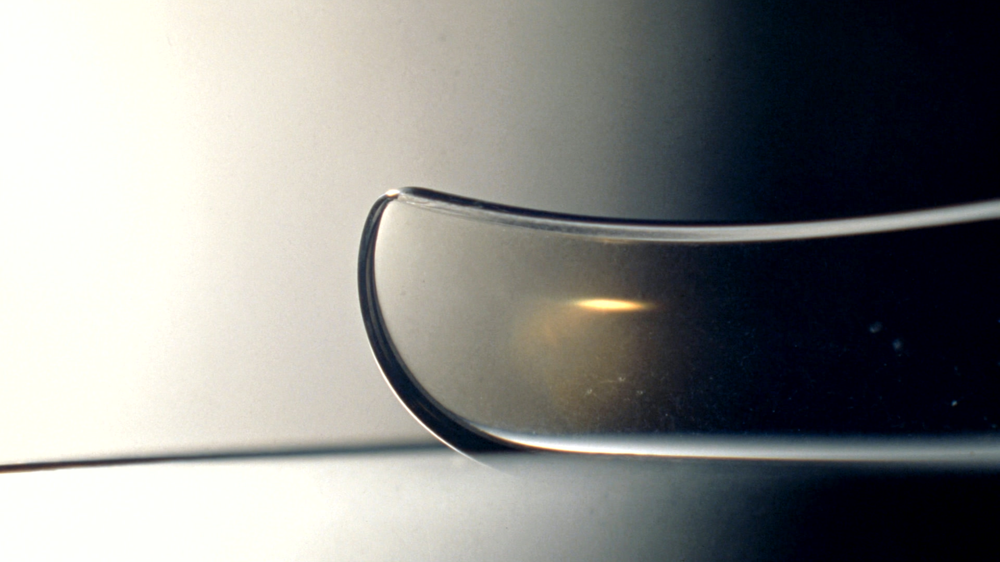
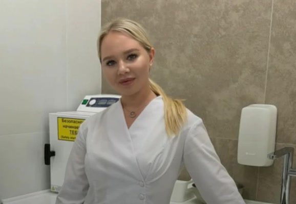
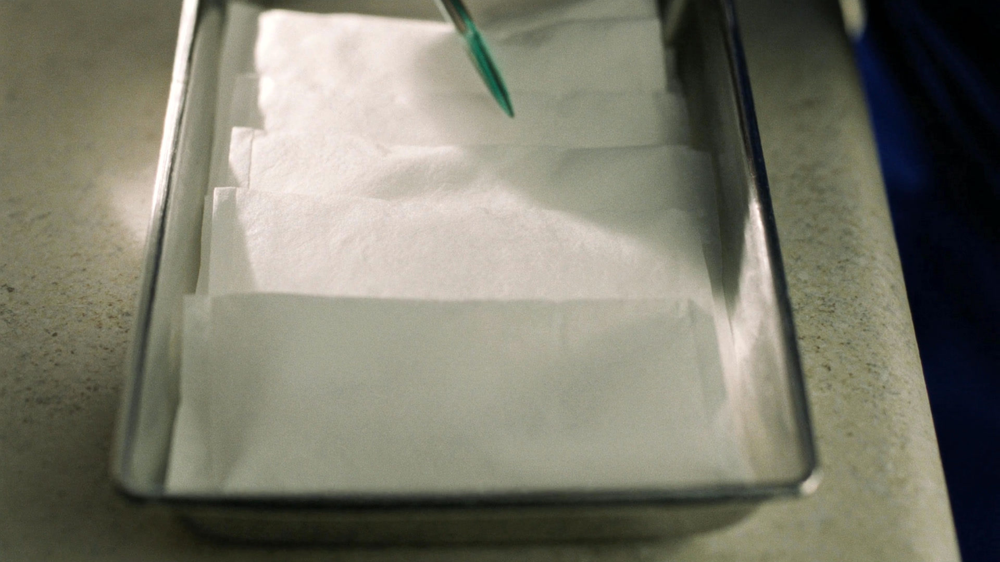
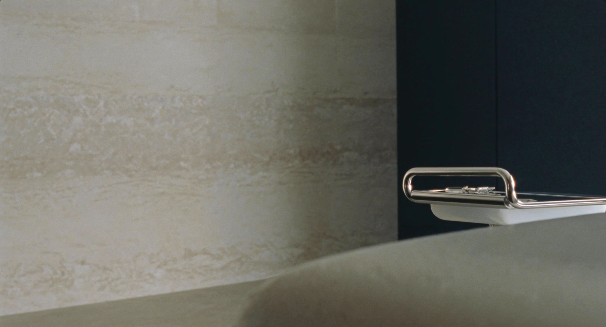
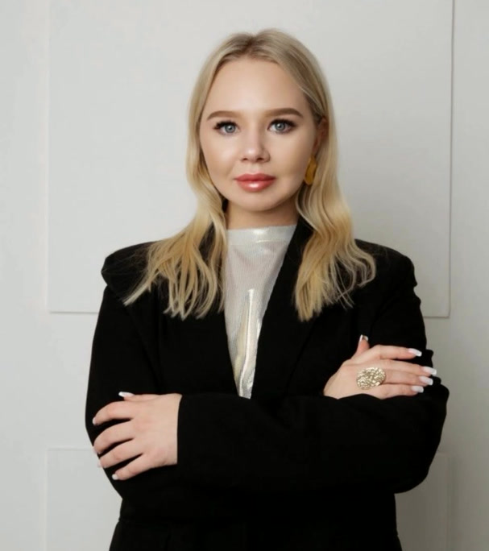

Я не разделяю внутреннее и внешнее. Кожа отражает то, что происходит внутри.
Поэтому сначала я смотрю. И только потом решаю, что делать.
Осмотр под дерматоскопом идёт до удаления, а не после. Иногда после него выясняется, что удалять не нужно вовсе.
Маликова Мария Сергеевна
Врач-дерматовенеролог, терапевт, косметолог. В медицине с 2015 года.
Я не разделяю внутреннее и внешнее.
Маликова Мария Сергеевна. Врач-дерматовенеролог, терапевт, косметолог.
О враче

- 2015в медицине с этого года
- 2 годаординатура по дерматовенерологии
- 4специальности в одних руках
Я пришла в медицину осознанно, с желанием помогать и быть рядом тогда, когда это действительно нужно. В те моменты, когда есть тревога, вопросы или усталость от поиска решений.
Для меня медицина это высшая форма помощи человеку в самый уязвимый момент его жизни.
Я не разделяю внутреннее и внешнее: состояние кожи, волос и внешнего вида всегда отражает процессы внутри организма. Поэтому к каждому пациенту подхожу комплексно. Сначала разбираемся в причине, потом работаем с проявлением.
Доказательная медицина
Назначения по действующим клиническим рекомендациям. Без универсальных схем и без лишних препаратов.
Сначала причина
Кожа отражает то, что происходит внутри. Разбираемся, почему проблема возникла, а не только убираем проявление.
Вы всё понимаете
Объясняю диагноз и каждый шаг. Вы уходите с приёма с ясной картиной, а не со списком назначений.
Главное направление
Вы носите это на себе третий год.
Цепляется цепочкой. Мешает под бюстгальтером. Задевается бритвой или расчёской. Вы всё собираетесь дойти до врача и всё не доходите, потому что в голове у вас операция.
Это не операция. Это осмотр под дерматоскопом и двадцать минут приёма.
Как быстро и не так больно, как я себе представлял. Почему я раньше не решил эту проблему. Что говорят пациенты, выходя из манипуляционной
Что стоит удалять
-
Всё, что травмируется
Цепочкой, ремнём, бюстгальтером, при расчёсывании, в том числе на коже головы. Повреждённое образование кровоточит.
-
Папилломы
Их стоит удалять всегда: они растут и в объёме, и в количестве.
-
Ангиомы, красные родинки
Состоят из сосудов. Удаляются просто, без повреждения кожи: вспышка сосудистого лазера склеивает сосуды.
-
Всё, что назначил врач
Любое образование, которое дерматолог или онколог порекомендовал удалить после осмотра в дерматоскоп.
Растёт, изменило цвет, покрылось корочкой, кровоточит. И отдельно, если в прошлом было много солнечных ожогов. Плановый осмотр родинок стоит проходить раз в год.
Сначала смотрим
Под дерматоскопом видно то, чего не видно глазом.
Глазом обычная родинка и опасное образование могут выглядеть одинаково. Под увеличением видно структуру, и именно она отвечает на вопрос, что это такое.
- Сеть пигмента. Её рисунок и правильность говорят о природе образования.
- Сосудистый рисунок. Видно, как образование питается.
- Границы. Ровные или размытые, симметричные или нет.
Поэтому осмотр идёт до удаления. Ничего не удаляется, пока не понятно, что это.
Как это проходит
Удаление проходит быстрее и проще, чем все думают.
Осмотр и дерматоскопия
Смотрим каждое образование под увеличением. Решаем, что удалять, что наблюдать и что отправить на гистологию.
Обезболивание
Большие образования удаляются под местной анестезией: вы чувствуете только укол. Маленькие папилломы часто удаляют вообще без неё.
Радиоволновой метод
Аппарат режет ткань высокочастотной радиоволной и сразу запаивает сосуды. Здоровая кожа вокруг почти не задевается.
Заживление
Около недели до схода корочки, потом розовый след, который светлеет. После маленьких папиллом через три дня не видно ничего.

Про гистологию
Папилломы и себорейный кератоз можно удалять без гистологического исследования. Все невусы, то есть родинки, лучше удалять с гистологией: ткань уходит в лабораторию и смотрится под микроскопом.
Само удаление доброкачественного образования не может спровоцировать рак кожи. Это первый вопрос, который задают на приёме, и ответ на него именно такой.
Бородавки
Лягушки не виноваты.
Бородавки это вирус папилломы человека. Он попадает через микротрещины на коже при прямом контакте или через общие предметы: полотенца, поручни в транспорте, пол в бассейне и общем душе.
Обыкновенные
Плотные узелки с шершавой поверхностью, чаще на руках.
Подошвенные
Растут внутрь из-за давления при ходьбе, поэтому часто болят.
Плоские
Мелкие и гладкие, чаще встречаются у детей и подростков.
Нитевидные
Тонкие выросты на ножке, обычно на лице и шее.
Так можно занести инфекцию и разнести вирус дальше по коже. У детей до 65 процентов бородавок проходят сами в течение двух лет, но если они болят, мешают или активно размножаются, пора к врачу.
Когда лучше удалять
Не в жару и не перед отпуском.
После удаления образуется корочка, и её нельзя размачивать. Поэтому не стоит планировать удаление на период активного солнца, а также прямо перед бассейном, баней или сауной.
Лучшее время это межсезонье и холодные месяцы, когда кожа закрыта одеждой и солнца мало.

Направления
Через здоровье к эстетике, через причину к устойчивому результату.
Дерматовенерология
- Приём первичный и повторный
- Цифровая дерматоскопия
- Удаление новообразований радиоволновым методом
- Гистологическое исследование после удаления
- Осмотр дерматолога для школьной медкарты
Терапия
- Приём первичный и повторный, очно и на дому
- Внутривенное капельное введение препаратов, очно и на дому
- Подбор чек-апа с учётом возраста, веса, работы и наследственности
- Ведение хронических заболеваний
Косметология
- Уходовая
- Лечебная
- Инъекционная
- Аппаратная
- Коррекция возрастных изменений и восполнение дефицитов
Образование
Я всё время учусь.
Университет и ординатура это основа. Дальше идут школы и курсы, и их около сотни: сертификаты, постановки руки, мастер-классы.

-
6 лет
Самарский государственный медицинский университетЛечебное дело
-
2 года
Ординатура по дерматовенерологииОсновная специальность
-
Школа
Академия косметологии Elixir-EstateВрачебная косметология
-
Школа
Школа трихологии «Наутилус»Санкт-Петербург
-
Курс
ДерматоскопияМиченко А. В.
-
Курс
АкнеAcneFamily School
-
Курс
Внутривенная терапияБазовый курс для врачей
Вопросы, которые задают чаще всего
Спросите заранее, чтобы не бояться.
Это больно?
Большие и объёмные образования удаляются под местной анестезией. Вы чувствуете только укол обезболивающего, само удаление безболезненно.
Маленькие папилломы обычно удаляют либо вообще без анестезии, либо, при высокой чувствительности, с местным анестетиком.
Останется ли шрам?
После маленьких папиллом и ангиом шрамов не остаётся.
После больших образований остаётся плоский рубец примерно такого же диаметра, каким было само образование. Он не будет заметным.
Может ли удаление спровоцировать рак?
Нет. Удаление доброкачественного образования не может спровоцировать рак кожи.
Нужна ли гистология?
Папилломы и себорейный кератоз можно удалять без гистологического исследования.
Все невусы, то есть родинки, лучше удалять с гистологией.
Когда не стоит удалять?
В жару и в период активного солнца, а также прямо перед отпуском, бассейном, баней или сауной. После удаления образуется корочка, и размачивать её не нужно.
Сколько всё заживает?
Обычно около недели, пока не сойдёт корочка. На её месте остаётся розовый след, который потом светлеет.
После маленьких папиллом уже через три дня ничего не заметно.
Как часто проверять родинки?
Раз в год стоит показывать все новообразования дерматологу или онкологу для осмотра.
Не дожидайтесь планового срока, если образование растёт, изменилось по цвету, покрылось корочкой или кровоточит, а также если в прошлом было много солнечных ожогов.
Запись
Придите и посмотрим.
Осмотр под дерматоскопом это не больно и ни к чему не обязывает. Если удалять не нужно, я так и скажу.